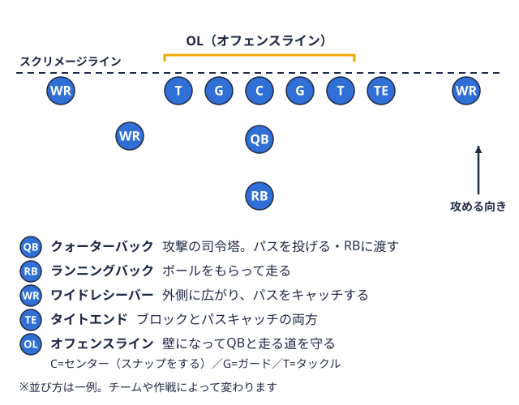
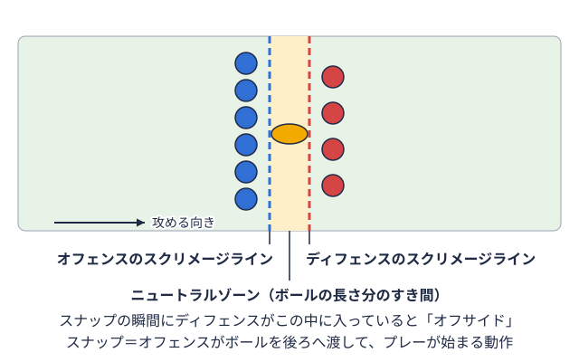

ルール 2026-11-27
アメフトの背番号とポジション｜ルールで決まる範囲と慣習
試合を観ていて「この番号の選手はどのポジションなのだろう」「ディフェンスボールを持たず、相手の攻撃を止める側のチーム。相手に進ませず、ボールを奪うことも目指す。用語辞典で見るにも番号の決まりはあるのか」と気になったことはないでしょうか。入部したばかりで背番号を渡された新入部員や、スコアシートをつけるマネージャーにとっても、番号の仕組みは早めに知っておきたい基礎知識です。
この記事では、日本アメリカンフットボール協会（JAFA）が公開している公式規則書の条文を確認したうえで、ルールとして決まっていることと、ルールではなく慣習として多いことを分けて整理します。先に結論を書くと、規則書で確認できた範囲では、番号の範囲がポジションごとに強く求められているのはオフェンスボールを確保していて、相手のゴールを目指して攻めている側のチーム。用語辞典で見るの「50〜79番」まわりで、そのほかは自由度が大きい仕組みです。
背番号のルールは「公式規則書」で確認できる
日本国内の試合で使われる公式規則は、JAFAが管轄しています。規則書の冒頭には、この公式規則が日本国内のアメリカンフットボールの試合に適用される競技規則であること、全米大学体育協会（NCAA）の規則を日本の独自性を加えて制定したものであること、内容は毎年見直されることが書かれています。
今回確認したのは、JAFAのサイトで公開されている規則書PDF（巻頭の日付は2024年8月、NCAA 2024年度規則に基づく版）です。2026年度の変更点は別の決定報として公表されているため、最新の運用は後半で触れる記事や、チームの指導者・連盟の案内もあわせて確認してください。なお、関東学生アメリカンフットボール連盟（KCFA）のTOP8・BIG8で、JAFA規則に加えた独自の取り決めがあるかどうかは、今回の調査では確認できていません。
規則書で決まっている番号の基本（1-4-2）
背番号の基本は、規則書の第1篇第4章第2条「番号の規制」にまとめられています。内容を整理すると次のとおりです。
| 項目 | 内容 | 違反した場合 |
|---|---|---|
| 使える番号 | すべてのプレーヤーは0から99までの番号を付ける。「07」「00」のように頭に0を付けてはならない | プレビアス スポットから5ヤード距離の単位で、1ヤードは約0.9メートル。フィールドには5ヤードごとに線が引かれている。 用語辞典で見る 用語辞典で見る |
| 同じ番号 | 同一ダウン攻撃1回分のこと。ボールが動き出してから止まるまでが1回で、攻撃側は4回まで続けて行える。 用語辞典で見る中に、同じチームの2人が同じ番号を着用してはならない 用語辞典で見る中に、同じチームの2人が同じ番号を着用してはならない | 同上 |
| 装飾 | 番号に近接して装飾することは許可されない | 同上 |
| 番号の変更 | ジャージの番号を変えて出場する場合、または試合当日の選手表（ロスター表）から番号を変えて出場する場合は、レフリーに報告する | 報告せず出場した場合はスポーツマンらしからぬ行為で、15ヤード。ひどい場合は退場 |
最後の「番号の変更の報告」は、規則書の変更履歴に「2024年度：プレーヤーの番号の規制の追加（1-4-2-d）」と記載されている項目です。報告を受けたレフリーは、相手チームのヘッドコーチに通知し、場内にも変更をアナウンスするとされています。
ここで押さえておきたいのは、規則書の文言は「同一ダウン中に」同じ番号を着用してはならない、となっている点です。名簿の管理方法や、同じ番号の選手がチームに複数在籍できるかどうかといった運用は、チームや大会の取り決めに左右される可能性があるため、所属チームのマネージャーや指導者に確認するのが確実です。
試合前の準備として、ロスターの番号とジャージの番号が一致しているかを確認する作業は、マネージャーの仕事に含まれる場合があります。仕事全体のイメージはアメフトのマネージャーの仕事内容で整理しています。
「望ましい番号」はオフェンスだけが図で示されている（1-4-1）
同じ章の第1条には「望ましい番号の付け方」があります。ここにはオフェンスのフォーメーションの図が載っていて、この図に従って番号を付けることを強く要請すると書かれています。図から読み取れる範囲は次のとおりです。
| ポジション | 望ましい番号 |
|---|---|
| エンド（TE攻撃のライン（壁役の選手たち）の端に並び、壁役とパスキャッチの両方をこなす選手。  用語辞典で見るなどライン端） | 80〜99 |
| タックルボールを持つ相手を、体を使って止めること。攻撃のラインの端に立つ選手の呼び名でもある。用語辞典で見る | 70〜79 |
| ガード | 60〜69 |
| センター（スナッパー） | 50〜59 |
| バックス（QB攻撃の司令塔。作戦に合わせて、パスを投げたり、走る選手にボールを渡したりする。用語辞典で見る・RBQBからボールを受け取って走り、陣地を進める選手。足の速さと当たり負けしない強さが求められる。用語辞典で見る・FBなど） | 0〜49 |
注意したいのは、「強く要請する」という表現です。この図は、規則書で確認できた範囲では罰則のついた規制として書かれているものではなく、要請として示されています。罰則がつくのは、後で説明する「スナッププレー開始の動作。地面に置いたボールを、攻撃側の選手が後ろへ渡す。 
また、規則書で確認できた範囲では、ディフェンスの番号について、ポジションごとの範囲を求める条文は見つけられませんでした。複数の解説記事も、国内ではオフェンスのみ制限があり、ディフェンスには特に決まりがないと説明しています（1st-down「【ゼロアメvol.8】アメフトの背番号ルールとは？」）。
50〜79番が特別な理由｜有資格レシーバーの見分け
では、なぜオフェンスの番号だけが問題になるのでしょうか。理由は、パスを受けてよい選手（有資格レシーバー）を、審判と相手チームが番号で見分けられるようにするためと説明されることが多く、規則書の条文もそれと整合します。
規則書の第7篇第3章第3条「正当なフォワード パスにタッチする資格」には、ボールがスナップされたとき、次のAチーム（オフェンス）のプレーヤーが有資格プレーヤーであると書かれています。
- スクリメージ ラインプレー開始時にボールの先端を通る、サイドラインに直角の線。攻守が向かい合う境目になる。用語辞典で見るの端の位置におり、50〜79以外の番号を付けているラインマン
- 50〜79以外の番号を付けているバック
つまり、50〜79番を付けた選手は、ラインの端にいてもバックの位置にいても、有資格レシーバーには含まれません。逆に、ラインの端にいる50〜79以外の番号の選手（多くはTE）は、有資格レシーバーとして扱われます。パスを受けてよい選手を番号と位置で判断する仕組みです。
無資格レシーバーが気をつけること
無資格レシーバーには、パスをめぐる制限もあります。第7篇第3章第10条では、パサーがニュートラル ゾーン攻守それぞれの線にはさまれた、ボールの長さぶんの空間。プレー開始の瞬間、守備側は入れない。用語辞典で見るを越える正当なフォワード パスを投げるまでは、当初の無資格レシーバーはニュートラル ゾーンから3ヤードを越えた位置にいてはならないとされ、違反すればプレビアス スポットから5ヤードの罰則です。ブロックのつもりで前に出ていきすぎると反則罰則が決まっているルール違反。審判が旗を投げて知らせ、陣地を下げられるなどの罰がある。用語辞典で見るになりうる、ということです。パスプロテクションパスを投げる選手が守備に襲われず投げられるよう、攻撃のラインが壁になって守ること。用語辞典で見るの考え方はアメフトOLのパスプロテクション基本も参考になります。
スナップ時の隊形にも番号の規定がある
番号は隊形にも関わります。規則書のフォーメーションに関する条文には、スナップ時にオフェンスのスクリメージ ライン上に、50〜79番のプレーヤーが最低5人いなければならないという規定があります。また、バックフィールドには5人以上のプレーヤーがいてはならないとされています。規定を満たさない場合は「不正なフォーメーション」の反則です。
規則書の解説の事例には、ライン上の5人が50〜79番をつけ、1人が82番をつけていて、バックフィールドが4人という並びが正当なフォーメーションとされた例が載っています。隊形の呼び名そのものはアメフトのフォーメーション用語の基本で扱っています。
TEと番号｜OL番号ではなく、バックスやWRに近い番号を付けるのが一般的
TE（タイトエンド）はライン端に並びますが、パスを受ける役目もあります。先ほどの有資格レシーバーの条文のとおり、ライン端に並ぶTEが有資格レシーバーとして扱われるには、50〜79以外の番号である必要があります。そのため、TEにはOLスクリメージライン上に並ぶ5人の壁役。パスを投げる選手を守り、走る選手の道を作る。用語辞典で見ると同じ範囲の番号ではなく、80番台や40番台など、50〜79以外の番号が付けられることが多いと説明されています。TEの役割そのものはアメフトTEの役割とはにまとめています。
なお、条文は「ライン端にいる」ことを条件にしているため、50〜79以外の番号の選手でも、ラインの内側に並んだ場合は、この条文の有資格には当てはまりません。どの並びでどの選手が有資格になるかは、審判がスナップ時に確認するポイントです。
2026年度に変わった「番号の例外」
2026年度の公式規則変更では、スクリメージ キック フォーメーション（パントボールを手から落とし、地面に着く前に蹴るキック。攻撃が進まないとき、陣地を押し返すために使う。用語辞典で見るなどの隊形）で、50〜79番のラインマンが5人未満のときの条件が整理されました。解説している既存記事では、スナッパーとその両側2人ずつの合計5人を、タックル ボックスの中に置く「2×2」の並びが条件になり、この5人は50〜79以外の番号でも番号の規則の例外となって無資格レシーバーになる、と説明しています。詳しくは大学アメフトのルール改正2026とスペシャル チームの役割を参照してください。
キッカーやパンターを担当する選手は、通常の番号のまま特殊な隊形に入ることになるため、番号と並びの組み合わせをあらかじめ指導者に確認しておくと、試合中の反則を減らしやすくなります。キックの練習の全体像はキッカー・パンターの練習法にあります。
番号の見た目にもルールがある（1-4-5）
ジャージの番号の大きさや色にも、規則書の定めがあります。第1篇第4章第5条では、次のように書かれています。
- ジャージの前面には高さ8インチ（20cm）以上、後面には高さ10インチ（25cm）以上の、明確に識別できる簡単にはとれないアラビア数字の番号を付ける
- 番号の色は、ジャージの色と明確に区別できる1つの色にする
- 同じチームのすべてのプレーヤーが、同一で単一の色、同一字体の番号を前面と後面に付ける
- 数字の線の太さはおおよそ1.5インチ（38mm）
- ユニフォームに付けるいかなる番号も、ジャージの前後の番号と同一の番号にする
規則に適合しないジャージや番号のチームには、試合前および後半開始前に正式なジャージへの変更を要望するとされています。新しくジャージを作る場面では、デザイン上の都合で番号が見えにくくならないよう、この条文を確認しておくと安心です。
ルールではなく「傾向」として多い番号
ここまでは規則書の内容でした。ここからは、ルールではない「傾向」の話です。
複数の解説記事は、次のような傾向を紹介しています。
- WRフィールドの外側に広がり、投げられたパスをキャッチして陣地を進める選手。用語辞典で見る（ワイドレシーバー）は80番台が多い
- QBは0〜19番、RBは20〜49番が多い
- ディフェンスでは、DB守備の後ろ側で、相手のパスを防ぐ選手の総称。後方と外側を守る。
 用語辞典で見るは1〜39番、LB守備の最前列のすぐ後ろに立ち、走るプレーを止め、パスも守る選手。守備の要といわれる。用語辞典で見るは40〜99番（50番台も比較的多い）、DL守備の最前列に並ぶ選手たち。相手のラインに当たって走るプレーを止め、パスを投げる選手に迫る。用語辞典で見るは90番台が多い
用語辞典で見るは1〜39番、LB守備の最前列のすぐ後ろに立ち、走るプレーを止め、パスも守る選手。守備の要といわれる。用語辞典で見るは40〜99番（50番台も比較的多い）、DL守備の最前列に並ぶ選手たち。相手のラインに当たって走るプレーを止め、パスを投げる選手に迫る。用語辞典で見るは90番台が多い - 体重の重いポジションほど大きい番号になりやすい
（1st-down「【ゼロアメvol.8】アメフトの背番号ルールとは？」、note「アメリカンフットボールのルール⑦背番号」より）
また、部員数が少ないチームでは、ラインが攻守を兼ねるために、DLが50〜79番を付けることもあるという説明もあります。これらはあくまで「そうしたチームが多い」という傾向で、規則書に書かれている決まりではありません。チームごとにエースナンバーの扱いや、学年・ポジションをもとにした割り振りの慣習があると考えられますが、各チームの番号の決め方は公表資料が乏しく、今回の調査では一般化できる情報を確認できませんでした。自分の番号は、チームの指導者に決め方を聞くのが確実です。
NFLとの違い
テレビで観るNFLと国内の大学の番号は、仕組みが異なります。NFLは、ポジションごとに着用できる番号の範囲が細かく定められています。SI（Sports Illustrated）の報道によると、2021年にNFLのオーナー会議が番号のルールを見直し、各ポジションの着用可能な範囲が広がりました。報道された範囲は次のとおりです。
| ポジション | 2021年変更後の範囲（報道） |
|---|---|
| QB・P・K | 1〜19 |
| RB・WR・TE | 1〜49、80〜89 |
| DB | 1〜49 |
| LB | 1〜59、90〜99 |
| OL | 50〜79 |
| DL | 50〜79、90〜99 |
出典：SI「Sources: NFL Owners Approve New Jersey Numbers Rule」
NFLではディフェンスにも番号の範囲があるのに対し、国内の公式規則書で確認できたのは、オフェンスの「望ましい番号」と「50〜79番」に関する規定でした。NFLの番号の運用は細かく見直されているため、最新の内容はNFLの公式発表で確認してください。
背番号を観戦に活かす
番号の仕組みがわかると、観戦がしやすくなります。
- オフェンスのスナップ前に、ライン上の50〜79番を数えてみる
- ライン端に並ぶ80番台などの選手が、パスの対象になるか（有資格か）を確認する
- 番号と位置から、「この選手は今、ブロックに残るのか、ルートを走るのか」を予想する
チームの日程・順位・所属の確認は、サイト内の一次データページが便利です。
- TOP8 チーム一覧 ― TOP8所属8大学のチームページへの入り口
- BIG8 チーム一覧 ― BIG8所属チームのチームページへの入り口
- TOP8 日程・結果 ― 試合の日程と結果
- TOP8 順位表 ― 現シーズンの順位
気になる試合が決まったら、チームページと日程をあわせて見ておくと、番号とポジションの対応を追いかけながら観戦できます。観戦の持ち物はアメフト観戦ガイド（スタジアム編）も参考にしてください。
よくある質問
アメフトの背番号は何番から何番まで使えますか？
JAFAの公式規則書（2024年版）では、すべてのプレーヤーは0から99までの番号を付けるとされています。「07」「00」のように頭に0を付けた番号は使えません。
ディフェンスの背番号に決まりはありますか？
規則書で確認できた範囲では、ディフェンスのポジションごとの番号の範囲を求める条文は見つかりませんでした。国内ではオフェンスのみ制限があるという説明が多いですが、所属チームや大会の取り決めは別に確認してください。
50〜79番はなぜ特別なのですか？
50〜79番の選手は有資格レシーバーに含まれないためです。スナップ時にはライン上に50〜79番が最低5人いなければならず、番号と位置でパスを受けてよい選手を見分ける仕組みになっています。
試合中に番号を変えて出場してもよいですか？
番号を変えて出場する場合は、レフリーへの報告が必要です。報告せずに出場すると、スポーツマンらしからぬ行為として15ヤードの罰則が規定されています。また、相手を欺くために試合中に番号を変えることは、規則書では非倫理的な行為の一つとされています。
関東TOP8・BIG8でも同じルールですか？
JAFAの公式規則は日本国内の試合に適用される規則です。KCFAのTOP8・BIG8に追加の取り決めがあるかどうかは、今回の調査では確認できていません。大会要項や連盟の案内も確認してください。
まとめ
アメフトの背番号は、0から99までを使うという基本のほかに、オフェンスだけが「望ましい番号」の図と、50〜79番に関する規定を持っています。50〜79番は有資格レシーバーに含まれず、スナップ時にはライン上に5人以上必要です。一方、ディフェンスの番号や、ポジションごとの多い番号は、規則ではなく傾向です。番号を変えて出場するときの届出や、2026年度に変わったキック隊形の例外など、実務で効く決まりもあります。入部したばかりの人も、観戦する人も、まずは「規則」と「傾向」を分けて覚えておくと、迷いにくくなります。
参考リンク
- 日本アメリカンフットボール協会 公式規則書（PDF）
- 【ゼロアメvol.8】アメフトの背番号ルールとは？ | 1st-down
- アメリカンフットボールのルール⑦背番号 | note（ほりえ）
- Sources: NFL Owners Approve New Jersey Numbers Rule | Sports Illustrated
本記事は、JAFA公式規則書（2024年8月の日付表記の版）の条文と、上記メディアが公開している情報をもとに、編集部が構成した一般的な解説ガイドです。規則は毎年見直されるため、最新の条文と所属チーム・大会の運用は、連盟や指導者の案内であわせて確認してください。
この部活・競技を応援したい方へ
協賛・応援はこちらから。
取材してほしい部活を募集中
あなたの部活・チームを取材してほしい方はこちらから。
部活を続けながら、就活も進めたい方へ
体育会の学生のための就活相談です。無料で、メールアドレス・学年・所属の入力だけで始められます。